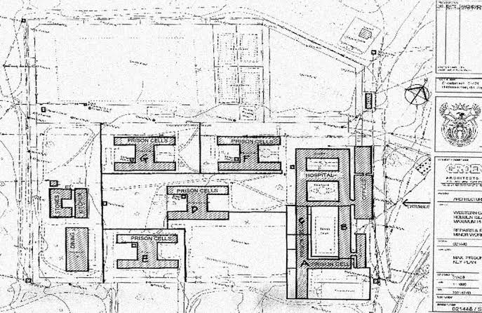
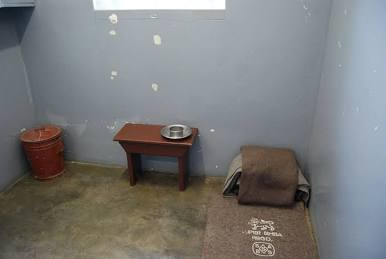

Constructed in the early 1960s using stone quarried on the island by political and common-law prisoners, the Maximum Security Prison (MSP) on Robben Island was architecturally engineered to enforce psychological isolation, strict surveillance, and physical control (Deacon, 1996:18; Buntman, 2003:45). The complex comprises four H-block General Sections (holding up to 52 inmates per communal cell) and a U-shaped Isolation Block containing approximately 90 individual single cells (Robben Island Museum, 2020; UNESCO, 1999).
The Isolation Block was subdivided into distinct wings (A, B, and C) separated by high masonry walls to prevent contact between political leaders and the broader prison population (Deacon, 1996:22). Section B, often referred to as the Leadership Section, housed prominent anti-apartheid movement figures—including Walter Sisulu, Govan Mbeki, Ahmed Kathrada, and Nelson Mandela (Mandela, 1994:380; Kathrada, 2004:95). Security featured five guard towers, continuous high-wall perimeters, and an elevated catwalk overlooking the B-Section quadrangle courtyard where prisoners performed manual labor under constant armed oversight (Buntman, 2003:62).
Cell 5 of B-Section is the most historically significant cell within the compound. Measuring approximately 2.1 by 2.4 meters (7 feet by 8 feet), it housed Nelson Mandela for 18 of his 27 years of imprisonment (1964–1982) (Mandela, 1994:385; Robben Island Museum, 2020). The austere cell contained only a thin sleeping mat on the concrete floor, a small wooden table, a slop bucket for sanitation, and a single high, barred window overlooking the exercise courtyard (Kathrada, 2004:102). Despite these oppressive spatial constraints, B-Section became a center of intellectual debate, political strategy, and covert education—earning the prison the informal moniker "Robben Island University" (Buntman, 2003:110; Deacon, 1996:30).
| DC Title | Architectural Plan and Cell 5 Spatial Layout of Robben Island Maximum Security Prison (Deacon, 1996; Robben Island Museum, 2020) |
|---|---|
| DC Creator | Department of Public Works (Apartheid Administration) / Digitized by Robben Island Museum (Robben Island Museum, 2020) |
| DC Date | 1964–1991 (Contextual Period) (Buntman, 2003) |
| DC Type | Image / Architectural Diagram & Interior Photograph (DCMI, 2020) |
| DC Subject | Robben Island; Maximum Security Prison; Section B; Cell 5; Nelson Mandela; Apartheid Architectural Control; Political Imprisonment (Deacon, 1996; UNESCO, 1999) |
| DC Source | Robben Island Museum Archives & Information Research Department (Robben Island Museum, 2020) |
| DC Publisher | Robben Island Museum / UNESCO World Heritage Repository (UNESCO, 1999; Robben Island Museum, 2020) |
| DC Rights | Robben Island Museum / National Heritage Institution (Republic of South Africa, 1999; Robben Island Museum, 2020) |
| DC Identifier | RIM-ARCH-MAP-MSP-05 (Robben Island Museum Archives, 2020) |